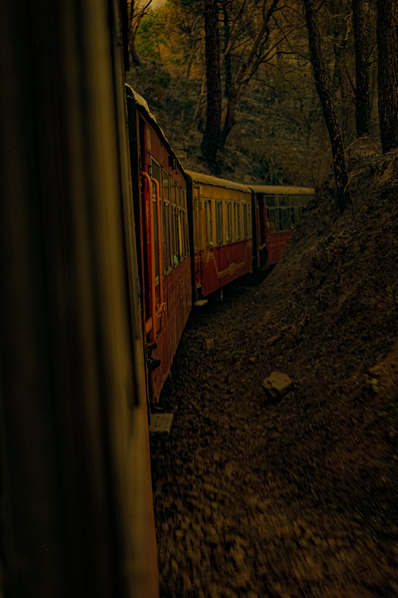
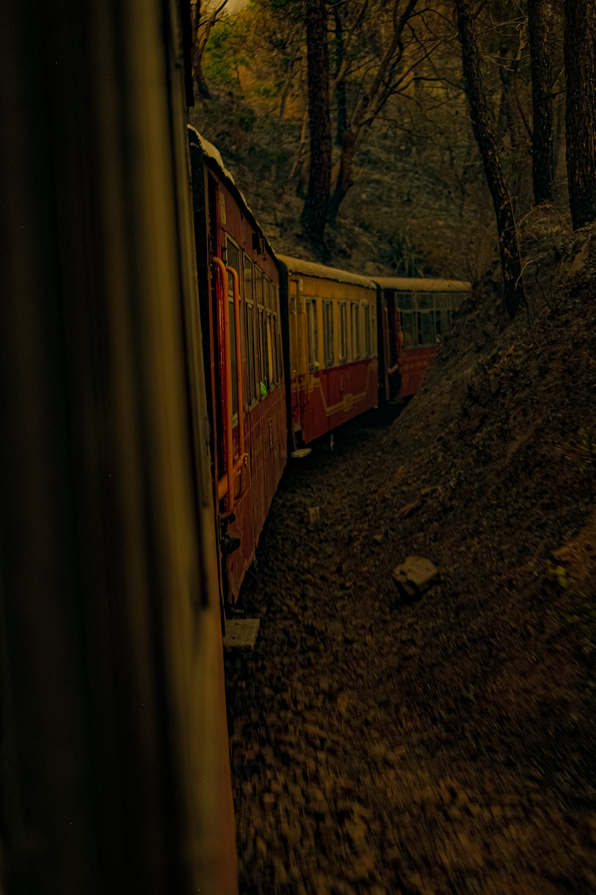

Photos
Shimla, 2024
These photos are from my trip to Shimla in 2024 with a friend — my second time carrying a camera on a trip. (The first was a day trip to New York, which may or may not count as a real trip, but let’s not split hairs.)
I took a lot of photos. These are just a few of them. The trip itself was lovely — equal parts smiles, footsteps, and food. We wandered all over the city, mostly away from the crowds of Mall Road, discovering side alleys, staircases, and sleepy slopes.
One morning, we stumbled upon a tiny local breakfast joint that served something called licchi. It tasted amazing. Like nothing we’d had before (okay, that might be an exaggeration). Was it actually that good, or were we just extremely hungry? No idea. What I do know is I’d go back just to try and find that place again. Totally worth the effort — or at least the romantic quest of it.
Fun fact: Shimla was once the summer capital of British India, and its architecture still carries colonial leftovers in red roofs and stone walls. The Kalka–Shimla Railway is a UNESCO World Heritage Site — and also the place where we spent a solid 7 hours stranded one night. Not by accident. We chose to. (Read: I misplanned the connecting train from Delhi to Kalka. We arrived slightly ahead of schedule.) It was oddly magical. I now have enough visual content from Kalka station to make a short film about it.
Shimla sits in the southwestern Himalayas at an average altitude of 2,206 metres (7,238 ft) — high enough for pleasant summer weather, but low enough that you don’t need a jacket. Beyond Lower Bazaar and the usual loops, we also climbed the long stairway to Jakhu Mandir and drove out to the Himalayan Nature Park in Kufri.
It’s hard to say what I loved more — the walking, the company, or the memories (read pictures) that came home with me.
 



Harshil, 2024
After Shimla, I went on a trip to Harshil with my parents. There were other stops along the way, but Harshil was the main event — the headliner, if you will.
Unlike Shimla, which leans heavily into its touristy charm, Harshil is refreshingly under the radar — the kind of place that travel influencers would call “undiscovered” just before ruining it.
This was also my third and final trip with my beloved Fujifilm XT1 (RIP, old friend). Harshil gave it a worthy send-off.
The valley, tucked near the India–China border, wraps around you with pine-covered hills and silence. We stayed in a village apple orchard where the Bhagirathi river flowed just a few feet from where we slept. It felt like living inside a postcard.
Tourism here is still in its awkward teenage phase — a few shops have popped up selling everything from woolens to Maggi, but it hasn't yet gone full 'Mall Road.' I kept wondering: is this good?
On one hand, more visitors mean more money for locals — a new shop here, a homestay there. But does it also mean something quiet and unspoiled is slowly being traded in for something louder and shinier? Probably both.
As with most change, it’s complicated. New roads bring new routes and new risks. But also, more people get to fall in love with places like this — like I did.